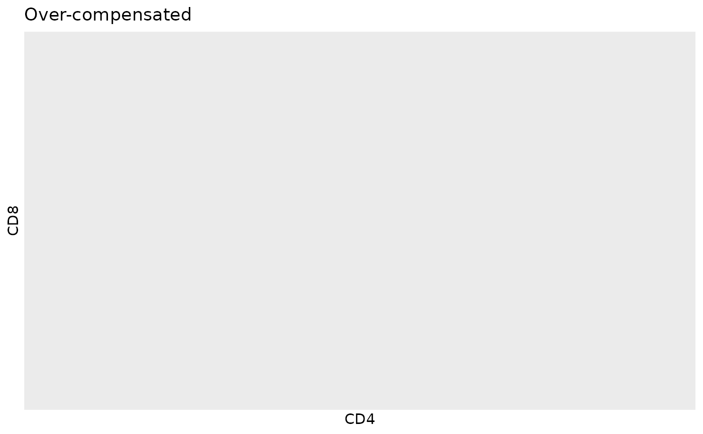
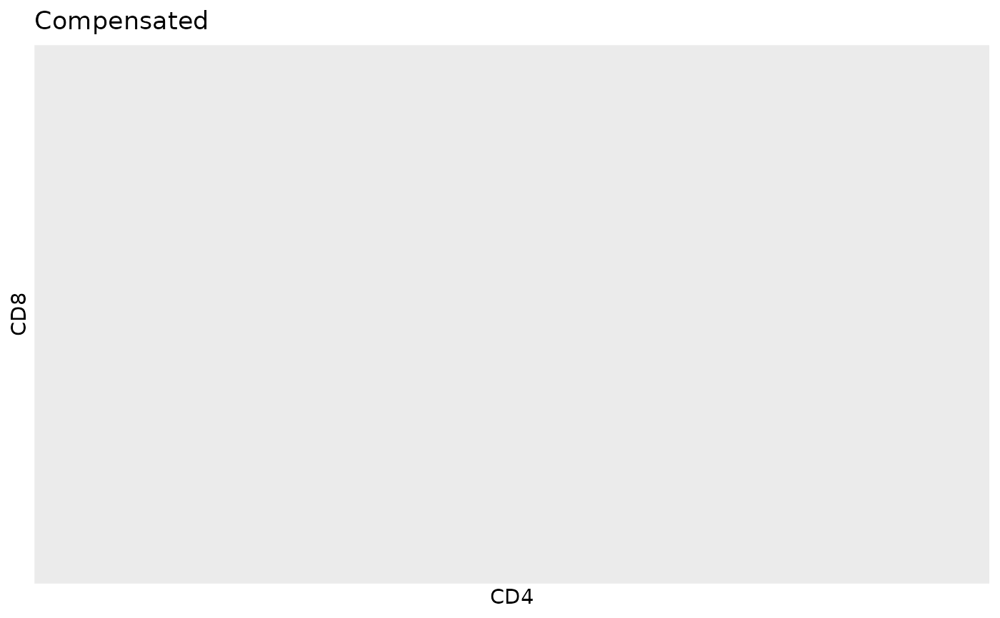

Compensate data using values stored in spill
Arguments
- flowstate.object
the return of read.flowstate.
- decompensate
Logical; if
TRUE, will return data values to their original state.
Examples
fcs.file.paths <- system.file("extdata", package = "flowstate") |>
list.files(full.names = TRUE, pattern = "BLOCK.*.fcs")
#read all .fcs files as flowstate objects; concatenate into a single object
fs <- read.flowstate(
fcs.file.paths,
colnames.type="S",
concatenate = TRUE
)
#> COVAIL_002_CYTOKINE_BLOCK1_1.fcs --> flowstate
#> COVAIL_002_CYTOKINE_BLOCK1_2.fcs --> flowstate
#> COVAIL_002_CYTOKINE_BLOCK1_3.fcs --> flowstate
#> Concatenating 'flowstate.ojects'...
#transform
flowstate.transform(fs,c('CD4','CD8'))
#> flowstate.object --> transforming...
#row index; CD4 vs CD8
index<-which(names(fs$spill) %in% c('CD4','CD8'))
#update a spill value
spillover.update.value(fs,CD8,CD4,0.03)
#over-compensated data
plot(fs,CD4,CD8) + ggplot2::labs(title = "Over-compensated")
#> Warning: Computation failed in `stat_binhex()`.
#> Caused by error in `compute_group()`:
#> ! The package "hexbin" is required for `stat_bin_hex()`.

#apply compensation
spillover.apply(fs)
#> flowstate.object --> transforming...
#compensated data
plot(fs,CD4,CD8) + ggplot2::labs(title = "Compensated")
#> Warning: Computation failed in `stat_binhex()`.
#> Caused by error in `compute_group()`:
#> ! The package "hexbin" is required for `stat_bin_hex()`.

#return data values to original state by decompensating
spillover.apply(fs,decompensate=TRUE)
#> flowstate.object --> transforming...
plot(fs,CD4,CD8) + ggplot2::labs(title = "Over-compensated")
#> Warning: Computation failed in `stat_binhex()`.
#> Caused by error in `compute_group()`:
#> ! The package "hexbin" is required for `stat_bin_hex()`.